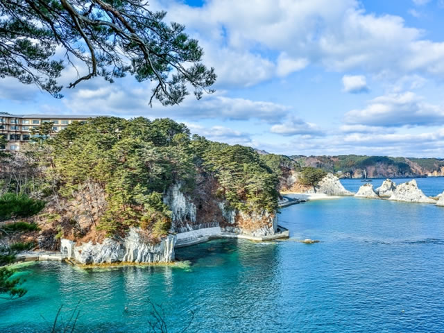
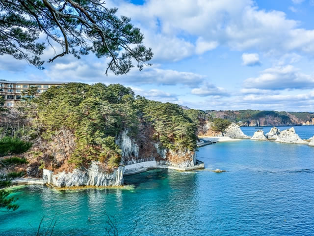

浄土ヶ浜
 

浄土ヶ浜は三陸復興国立公園にある三陸を代
表する景勝地です。今から役５２００年前に
形成されたと言われており、火山岩からでき
た白い岩と小石によって入り江が作られてい
るため、外海から隔てられており波も穏やか
です。「日本の水浴場88選」や「日本の快水
浴場百選」にも選ばれ、海水浴の季節には多
くの人で賑わう人気スポットです。
| 所在地 | 岩手県宮古市日立浜町 |
|---|---|
| 電話番号 | 0193-62-2111 |
| 定休日 | 3月～11月 (冬季休業、12月から2月以外は年中無休で営業) |
| 営業時間 | 8時30分～17時 |
| 料金 | 無料 |
[アクセス経路]
ルート1： 盛岡駅 → 【バス120分】 宮古駅 → 【バス20分】 奥浄土ヶ浜 → 【徒歩1分】 浄土ヶ浜
ルート2： 盛岡南IC → 【車135分】 浄土ヶ浜
バス停下車後徒歩5分